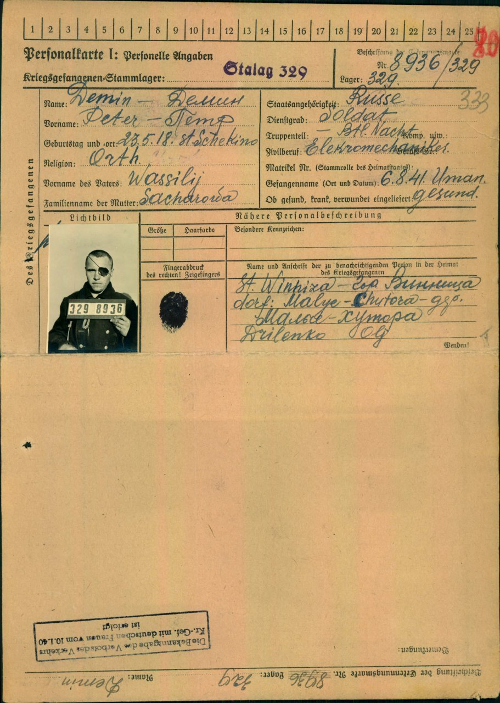
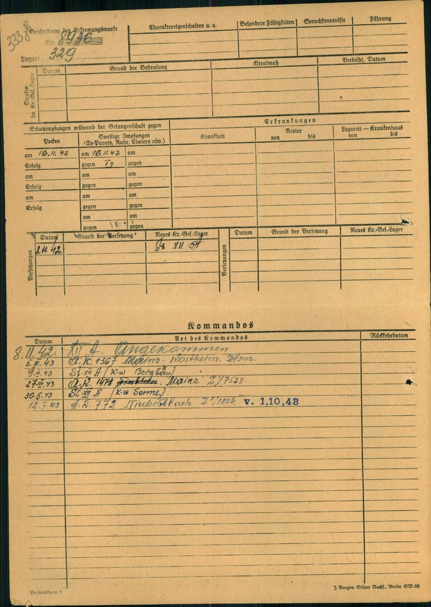

Готуючись до війни проти СРСР нацистське керівництво планувало експлуатувати радянських військовополонених лише для потреб Вермахту. Критична нестача робочої сили в німецькій військовій економіці вже восени 1941 р. змусила Гітлера дозволити використовувати їх працю в усіх сферах господарства. Постачання робітників до Райху стало пріоритетним завданням служби військового полону Вермахту.
Мапа таборів для радянських військовополонених на території Третього Райху.
За час Другої світової війни на території Німецького Райху, згідно з останніми дослідженнями, загалом було 1000 таборів для військовополонених різних національностей. Табори розташовувалися відповідно до військових округів (Wehrkreis), які позначалися римськими цифрами, тому назва табору обов’язково містить номер військового округу, де він знаходився. Табори для військовополонених організовувалися зазвичай поблизу військових полігонів або в історичних фортецях.


Наказ Головнокомандування Вермахту про вивезення радянських військовополонених на роботу до Німеччини. 24 грудня 1941 р. © ЦДАВО України.
Із середини грудня у таборах почало діяти 10 «комісій з працевикористання», щоб відібрати усіх працездатних військовополонених для оборонної індустрії. У серпні 1944 р. у Третьому Райху працювало 631 559 радянських військовополонених. Найбільше їх було на шахтах, металургійних підприємствах, тобто в галузях промисловості, які потребували фізично важкої й некваліфікованої праці.
Полонених із Вінницького табору відправляли до різноманітних таборів на території Німеччини та окупованих нею країн.
Полонені під охороною вирушають з Вінницького табору. © Приватний архів М.Богарта та І. Ланового
Частина з них прибувала до вербувального і транзитного табору шталаг 326 VI K, Штукенброк/Зенне, земля Рейн-Вестфалія. Завданням табору було забезпечення робочою силою великі підприємства і шахти Рурської області та інші виробництва в містах і селах регіону.
Шталаг 326 був одним з найбільших таборів в Третьому Рейху. З 10 липня 1941 р. до 2 квітня 1945 р. через табір пройшло понад 300 тисяч радянських військовополонених.
Життя для переважної більшості в’язнів тут було так само важким, як і в інших таборах для радянських військовополонених. Недоїдання, недостатнє медичне обслуговування, інфекційні хвороби, жахливі санітарно-гігієнічні умови, важка праця були причиною високого рівня смертності серед бранців. Військовополонених ховали неподалік на табірному цвинтарі.
Землянки в шталазі 326 VI K (Зенне), літо 1941 р. © Gedenkstätte Stalag 326 (VI K) Senne
Коли в липні 1941 р. до Зенне прибули перші ешелони з військовополоненими, табір ще не був готовий до їх прийому. Полонені самі виривали собі тимчасові землянки, робили намети з гілок та парусини. Бараки почали будувати лише восени 1941 р. Загалом в таборі було споруджено 200 дерев’яних бараків.
Табірні поліцейські б’ють полонених. Шталаг 326 VI K, Штукенброк/Зенне, 1942 р. Hugo Lill © LWL-Medienzentrum für Westfalen
Табірні поліцейськіяких набирали із радянських військовополонених, як і німецькі охоронці, масово застосовували фізичне насильство.
19_94: Табірний поліцейський Сашко глузує над полоненим. У спогадах його називають українцем і згадують як про найбільш жорстокого в таборі Зенне. Уніформу поліцейські придумували собі самі. Шталаг 326 VI K, Штукенброк/Зенне, 1942 р. Hugo Lill © LWL-Medienzentrum für Westfalen
Звільнення шталагу 326, квітень 1945. Фото з місцевої газети © колекція О. Нікеля.
На початку квітня 1945 р. американські солдати звільнили приблизно 9000 військовополонених в таборі Зенне. Через декілька тижнів їх відправили до СРСР.


Реєстраційна картка військовополоненого Петра Дьоміна, 1918 р.н. із станції Щьокіно, родина проживала у Вінницькій області.
У серпні 1941р. під Уманню потрапив у полон. Зареєстрований у Вінницькому шталазі 329. З листопада 1942 р. перебуває у різноманітних робочих командах на території Німеччини, у тому числі з травня 1943 р. у таборі Зенне.Його подальшу долю на цей час встановити не вдалося.Сьогодні Меморіальне кладовище радянських військовополонених налічує 36 рядів братських могил. На жаль, загальна кількість поховань невідома. Цифри варіюються від 15 до 65 тисяч загиблих. На цей час співробітники меморіалу змогли встановити імена майже 15 тисяч осіб.